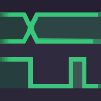
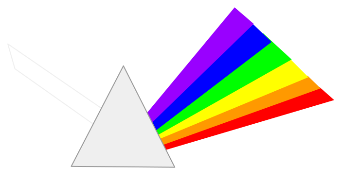

AURORA — manual de uso¶
Este manual ensina a usar a AURORA do zero: instalar, criar um projeto, gerar um processador SAPHO sob medida, escrever o algoritmo em C±, compilar, simular e olhar o circuito por dentro. Nenhum conhecimento prévio da plataforma é assumido. Alguma familiaridade com a linguagem C e com a ideia geral de circuitos digitais torna a leitura mais confortável, mas não é pré-requisito.
Nota
Este manual descreve a AURORA 6.3.2 para Windows 10 e 11. Para a versão exata, o commit e o método usado na apuração, veja Escopo, versão e método.
Por onde começar¶
Se esta é a sua primeira vez, siga a trilha na ordem: conheça a AURORA e seus fluxos, entenda o que é o SAPHO, instale, conheça a janela e faça o primeiro projeto, um filtro de média móvel construído do começo ao fim. São cerca de trinta minutos até ver o seu próprio processador rodando na forma de onda.
Se você já tem um projeto em andamento, use o menu lateral para ir direto à tarefa. As páginas de referência reúnem diretivas, biblioteca, atalhos e sintomas de falha para consulta rápida, sem repetir o tutorial.
Comece aqui¶
Entenda o papel da AURORA e escolha entre o fluxo Verilog e o fluxo SAPHO.
Baixe, instale e abra a AURORA pela primeira vez no Windows.
Localize a barra de ferramentas, a árvore, o editor, os terminais e a barra de status.
Escolha seu fluxo¶
Crie ou importe RTL, defina o Top Level, simule e analise o circuito sem gerar um processador.
Comece pelo primeiro projeto e percorra da criação do processador à forma de onda.
Consulte por tarefa¶
Crie, abra, organize e preserve os arquivos de um projeto da AURORA.
Consulte tipos, operadores, diretivas, entrada, saída e recursos da linguagem.
Entenda a arquitetura gerada e o efeito de cada parâmetro do processador.
Escolha Icarus, Verilator ou cocotb e siga para formas de onda e PRISM.
Configure a assistente e conheça as ações disponíveis sobre o projeto.
Diagnostique falhas de projeto, compilação, simulação, PRISM e IA.
As ferramentas que você vai usar¶
A AURORA não substitui as ferramentas consagradas de projeto digital: ela as reúne e as aciona por você. Todas acompanham a instalação, e nenhuma exige licença.
a IDE
compiladores
simulação
simulação rápida

formas de onda
formas de onda
síntese

visualizador RTL
testes em Python
O caminho completo, em um diagrama¶
O percurso abaixo é o mesmo em todo projeto SAPHO, e este manual o segue nessa ordem. Você escreve apenas o bloco à esquerda; a AURORA cuida do resto.
flowchart LR
CMM["Algoritmo C±<br>(.cmm)"] --> YANC["Cadeia YANC<br>cmmcomp · appcomp · asmcomp"]
YANC --> HW["Processador em Verilog<br>+ memórias .mif"]
YANC --> TB["Testbench gerado"]
HW --> SIM["Simulação<br>Icarus ou Verilator"]
TB --> SIM
SIM --> WAVE["Formas de onda<br>GTKWave ou Surfer"]
HW --> PRISM["Diagrama RTL<br>PRISM"]
HW --> FPGA["Síntese em FPGA<br>fora da AURORA"]
A única etapa que acontece fora da AURORA é a última: levar o Verilog e as imagens de memória à ferramenta do fabricante do FPGA, como o Quartus ou o Vivado, para a gravação física.
Primeiros passos
Projetos e ferramentas
Fluxo SAPHO
A linguagem C±
O processador SAPHO
Simular e analisar
Aurora Intelligence